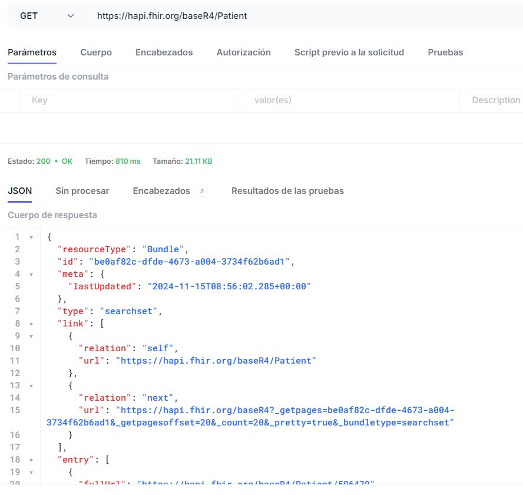
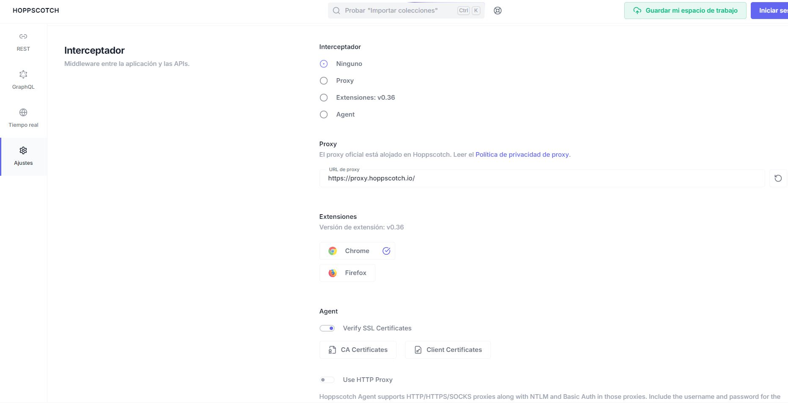
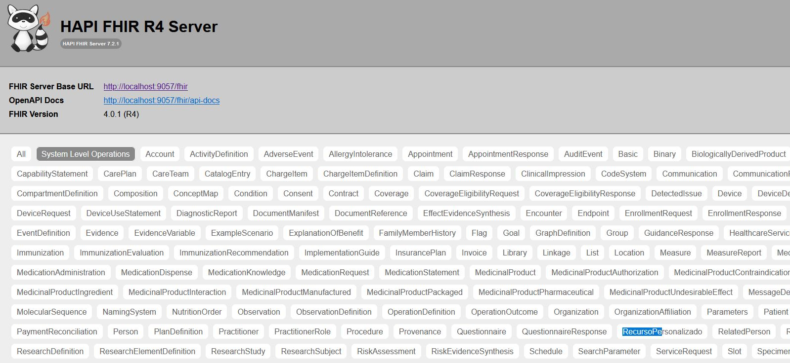
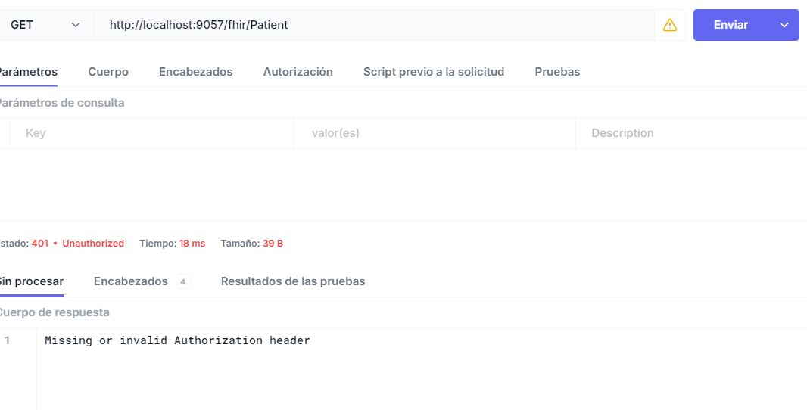
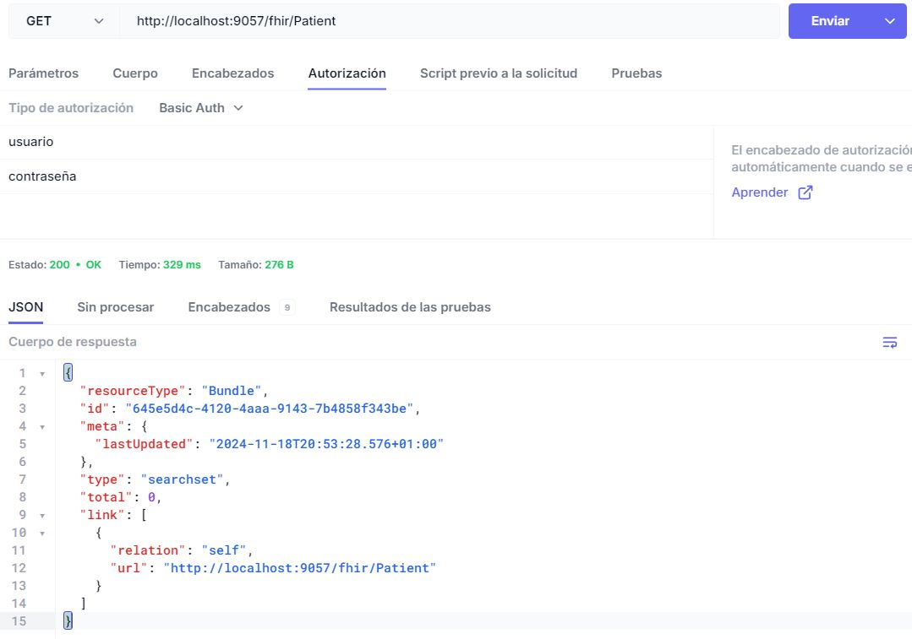
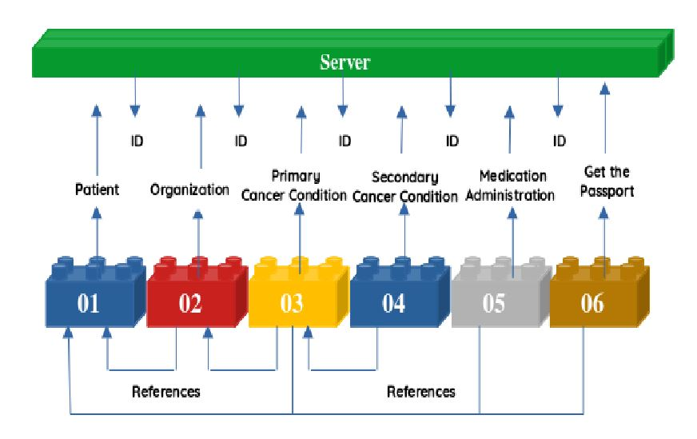
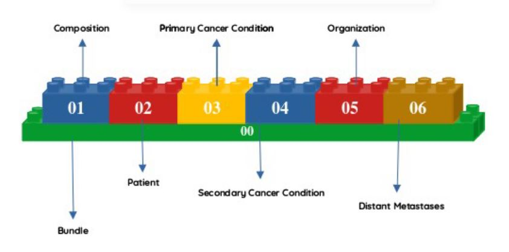

Java on FHIR
Jose y Lucas

Introducción a FHIR
Para empezar, si no estás familiarizado con el estándar FHIR puedes leer una introducción a la misma en la siguiente presentación
En caso de ya saber un poco de esto, continúa leyendo
Zona de juegos
Esta presentación está dividida en 4 partes
1. Tecnologías - Explica las principales herramientas y librerías.
2. Servidor - Explica de manera sencilla cómo montar un servidor FHIR
3. Cliente - Explica de manera sencilla cómo montar un cliente FHIR
4. Extras - Explica otros recursos y herramientas aplicables
Tecnología/s
Hay múltiples tecnologías que nos pueden ayudar con el estándar FHIR, a continuación te detallamos unas cuantas:
Testers, Servidores premontados, Librerías, Integraciones, Documentación de API, Herramientas de apoyo
API testers
Para empezar a familiarizarnos con FHIR, lo mejor es instalar un cliente REST y realizar una serie de acciones sencillas usando estas aplicaciones y FHIR.
Puedes usar hoppscotch de manera online y/o en local, que es open source. También puedes usar postman que es más conocido anque no es de código libre.
Para no perder mucho el tiempo, apuntaremos nuestras herramientas al siguiente servidor online de HAPI server - (https://hapi.fhir.org/baseR4/) doc -(https://hapi.fhir.org/baseR4/swagger-ui/) pcsp - (https://sandbox.hl7europe.eu/pcsp/)
En este otro enlace, puedes encontrar más servidores públicos de prueba
Ej. Hoppscotch
La forma más sencilla de probarlo es entrando en el siguiente enlace.
Tras esto, sobre el menú REST, pulsa sobre el símbolo + y selecciona GET, coloca (https://hapi.fhir.org/baseR4/Patient) en lugar de (https://echo.hoppscotch.io).
Pulsa sobre el botón enviar y deberías recibir una respuesta del servidor similar esta. ¡Enhorabuena, ya estás interactuando con un servidor FHIR!
Ej. Hoppscotch
Instalación Hoppscotch
La instalación como PWA (Web app) es muy sencilla.
1. Abre Chrome o cualquier navegador basado en chrome (ej. brave)
2. Ves a la url hoppscotch.io
3. Click en "Install +" en la parte derecha superior, junto a la barra de navegación.
4. Sigue las instrucciones que te da el navegador.
Ej. Hoppscotch
Ahora mira en settings la configuración de la aplicación.
Ejercicios para romper mano
| Acción | Método |
|---|---|
| Busca todos los pacientes | GET |
| Busca un paciente por su nombre | GET |
| Busca los recursos "Condition" que pertenezcan a un paciente | GET |
| Busca todos los recursos de un paciente | GET |
| Inserta un paciente | POST |
| Elimina un paciente | DELETE |
Ejercicios para romper mano
| Acción | Solución |
|---|---|
| Busca todos los pacientes | GET a http://localhost:9057/fhir/Patient puedes usar _count para obtener un mayor o menor núemero de resultados en las búsquedas. |
| Busca un paciente por su nombre | |
| Busca los recursos "Condition" que pertenezcan a un paciente | |
| Busca todos los recursos de un paciente | GET a http://localhost:9057/fhir/Patient/id$everything aquí también aplica _count recibiendo más o menos resultados |
| Inserta un paciente | POST a http://localhost:9057/fhir/Patient y cuerpo con un recurso fhir correcto |
| Elimina un paciente | DELETE a http://localhost:9057/fhir/Patient/iddelrecurso |
Librerías
Aunque FHIR es básicamente JSON, para gestionar recursos FHIR de manera más eficiente y cómoda con java, usaremos HAPI FHIR que permite trabajar con los recursos fhir como si fueran objetos.
A día de hoy nostros sólo podemos recomendar esta librería, que es muy completa y flexible, y es lo mejor de lo que hemos probado.
Librerías Hapi Ej.
Un ejemplo de cómo usar objetos java con hapi-fhir. Más adelante profundizaremos un poco más.
// el objeto Java
Patient patient = new Patient();
patient.addName()
.setUse(HumanName.NameUse.OFFICIAL)
.setFamily("Bruteztrausen")
.addGiven("Bestiajez");
// el parseador de objeto hapi-fhir a jsonstring
encoded = ctx.newJsonParser().setPrettyPrint(true).encodeResourceToString(patient);
System.out.println(encoded);
Servidores premontados
Hemos buscado servidores que fueran robustos, y permitieran ampliar sus capacidades usando java.
Básicamente hay 2 que cumplan estas especificaciones, HAPI e IBM. Ahí encontrarás el código fuente e instrucciones para ejecutarlos, aunque a nosotros, tras unas pruebas sencillas, nos dió mejor resultado el JPA de HAPI. Más adelante haremos una introducción sencilla a este servidor.
Integraciones
Como FHIR es básicamente JSON es bastante fácil de integrar con otros sistemas, incluso se puede utilizar dentro de herramientas del tipo flujo de datos como son, n8n, node-red o por ejemplo Apache Airflow que ya gasta el equipo de DANA del hospital.
No obstante, para realizar integraciones profundas y complejas, puede ser interesante mirar Apache Camel que aligera bastante la carga de trabajo.
Más adelante pondremos ejemplos de como usar FHIR con cada uno de estos sistemas.
Documentación
Swagger y open-api se usan para la documentación de la api. Puedes ver un ejemplo en este enlace. Es básicamente un generador automático de página web con documentación interactiva de la api FHIR.
Si usas el servidor de HAPI, este lleva ya integrado el generador de swagger de manera nativa.
Servidores de terminología
Ontoserver, Snowstorm para servidores de terminología.
Si usas el servidor de HAPI, este lleva también incluído un servidor de terminología sencillo (no tan desarrollado como los anteriores) pero viene integrado de manera nativa y es también muy personalizable.
Servidor
¿Cómo podemos levantar un servidor FHIR?
Posibilidades
Existe diferentes implementaciones de un servidor HAPI, creadas para usos específicos.
Según nuestras necesidades usaremos uno u otro, las posibilidades son ...
JPA HAPI-FHIR server
Es una implementación completa de un servidor FHIR que utiliza una base de datos relacional para el almacenamiento de recursos. Este servidor proporciona su propio esquema de base de datos y gestiona toda la lógica de almacenamiento y recuperación sin necesidad de programación adicional
Es fácil de levantar e implementar, es útil para crear repositorios de datos en formato FHIR y nos servirá como punto de partida en el aprendizaje.
Plain HAPI-FHIR server
Conocido también como "Facade", este servidor actúa como una capa intermedia sobre un backend proporcionado por el usuario. En este modelo, el desarrollador escribe el código que maneja la lógica de almacenamiento y recuperación de recursos, mientras que HAPI FHIR se encarga del procesamiento HTTP, la serialización/deserialización y la semántica REST de FHIR
Adecuado para situaciones donde se desea agregar una capa FHIR sobre sistemas existentes, permitiendo que estos expongan una interfaz FHIR sin modificar su estructura interna.
Útil por ejemplo para exponer una base de datos, o insertar datos fhir en una base de datos que ya tenemos en nuestro sistema.
JAX-RS HAPI-FHIR server
Para usar en un entorno donde ya se han creado servicios existentes utilizando JAX-RS, a menudo es deseable utilizar JAX-RS para servidores FHIR también. HAPI FHIR proporciona una implementación de servidor FHIR JAX-RS para este propósito.
Adecuado para aplicaciones que ya están basadas en JAX-RS y necesitan añadir capacidades FHIR sin cambiar la arquitectura existente
Comparación
Resumen implementaciones HAPI-FHIR server
| Característica | Plain Server | JPA Server | JAX-RS Server |
|---|---|---|---|
| Persistencia | Proporcionada por el usuario | Integrada con JPA | Dependiente de la implementación |
| Facilidad de uso | Requiere desarrollo adicional | Listo para usar | Requiere configuración JAX-RS |
| Flexibilidad | Alta (control total) | Media (basada en JPA) | Alta (integración con JAX-RS) |
| Integración | Sistemas heredados | Nuevas aplicaciones | Aplicaciones JAX-RS existentes |
| Uso | Facade: capa intermedia sobre sistemas existentes | Servidor listo para usar con persistencia integrada | Servidor FHIR sobre aplicaciones JAX-RS |
JPA HAPI-FHIR server
En la documentación hay varias formas de levantar un jpa hapi-fhir server, usando docker, maven, jetty, spring-boot...
Nosotros vamos a utilizar el despliegue en local, por ser más sencillo y poder así meter mano al servidor de manera rápida.
JPA HAPI-FHIR server
Pasos a seguir:
- Descarga el código fuente
- Configura el servidor
- Arrancar el servidor
- Probar el servidor con un tester (postman, hoppscotch, etc.,)
JPA HAPI-FHIR server
Requisitos
- Tener instalado al menos Java 17
- Tener instalado Apache Maven 3.9.8 o superior
- Tener un tester (postman, hoppscotch, etc.,) o en su defecto un cliente o script de prueba que apunte al servidor de manera correcta.
JPA HAPI-FHIR server
Descargar HAPI FHIR Server
Descargamos el archivo zip desde el siguiente enlace:
https://github.com/hapifhir/hapi-fhir-jpaserver-starter/releases/tag/helm-v0.17.0JPA HAPI-FHIR server
Configuración del Proyecto
El archivo application.yaml en el HAPI FHIR JPA Server es crucial para la configuración del servidor, ya que define cómo este interactúa con su entorno. Este archivo utiliza la estructura YAML para establecer parámetros relacionados con la base de datos, el servidor FHIR, y otras configuraciones generales.
JPA HAPI-FHIR server
Configuración del Proyecto
Descomprimimos el código fuente y modificamos el archivo application.yml ubicado en:
./src/main/resourcesCambiamos el puerto a 9670 o cualquier otro puerto que quieras usar.
JPA HAPI-FHIR server
Primera Ejecución del Servidor
Para la primera ejecución, nos situamos con la consola sobre el directorio raíz y usamos el siguiente comando:
mvn clean spring-boot:run -PbootPara parar el servidor un CNTRL+C servirá
JPA HAPI-FHIR server
Verificación
Si todo ha ido bien, podemos acceder al servidor en:
http://localhost:9670/fhirTambién podemos probar con hoppscotch apuntando a la siguiente url
http://localhost:9057/fhir/metadataJPA HAPI-FHIR server
Ejecuciones Posteriores
Para las ejecuciones posteriores, para que arranque más rápidamente y recupere datos cacheados por maven, simplemente ejecutamos:
mvn spring-boot:run -PbootJPA HAPI-FHIR server
Configurar la Base de datos
Para que los datos del servidor sean persistentes y no se pierdan al reiniciar, es necesario cambiar la configuración de la base de datos. De forma predeterminada, el servidor utiliza una base de datos en memoria (H2) que no guarda los datos de forma permanente:
# url: jdbc:h2:mem:test_mem
url: jdbc:h2:file:./data/denverEsto modificar la URL de la base de datos en el archivo de configuración para que utilice un archivo local. De esta forma se obtiene algo de persistencia en los datos. Es útil para funcionar en pruebas simples.
También se pueden usar otros tipos de bases de datos soportadas por HAPI FHIR, como MySQL, PostgreSQL o Informix, si se necesita una solución más robusta para entornos de producción.
JPA HAPI-FHIR server
Configuración con PostgreSQL 1
Creamos la base de datos de postgres usando
psql -U postgresContraseña "admin" y luego..
CREATE DATABASE hapi_fhir;
\l
CREATE USER hapi_user WITH PASSWORD 'hapi_password';
GRANT ALL PRIVILEGES ON DATABASE hapi_fhir TO hapi_user;
\qJPA HAPI-FHIR server
Configuración con PostgreSQL 2
Para configurar PostgreSQL como la base de datos para HAPI FHIR, es necesario modificar el archivo de configuración para que apunte a una instancia de PostgreSQL. A continuación, un ejemplo de cómo hacerlo:
spring:
datasource:
url: 'jdbc:postgresql://localhost:5432/hapi'
username: hapi_user
password: hapi_password
driver-class-name: org.postgresql.Driver
jpa:
properties:
hibernate.dialect: ca.uhn.fhir.jpa.model.dialect.HapiFhirPostgresDialect
hibernate.search.enabled: falseJPA HAPI-FHIR server
Configuración con PostgreSQL 3
Finalmente ejecutamos estos 2 comandos
mvn clean install
mvn spring-boot:run
JPA HAPI-FHIR server
Configuración de Informix
Para utilizar Informix como base de datos, también es necesario cambiar la configuración del archivo de propiedades para apuntar a una instancia de Informix. Aquí un ejemplo de cómo hacerlo:
url: jdbc:informix-sqli://localhost:1526/fhir_db:INFORMIXSERVER=tu_servidor_informix
username: tu_usuario
password: tu_contraseña
driverClassName: com.informix.jdbc.IfxDriverAsegúrate de tener Informix instalado y en ejecución, y de configurar el servidor de Informix adecuadamente, incluyendo la creación de la base de datos fhir_db y la configuración del servidor.
JPA HAPI-FHIR server
Instalación de Drivers JDBC
Para poder utilizar bases de datos como PostgreSQL o Informix, es necesario instalar los drivers JDBC correspondientes en el servidor HAPI FHIR. A continuación, se explica cómo hacerlo:
- Descarga el archivo JAR del driver JDBC correspondiente para tu base de datos (por ejemplo, desde el sitio oficial de PostgreSQL o Informix).
- Coloca el archivo JAR descargado en la carpeta lib del proyecto HAPI FHIR.
- Modifica el archivo pom.xml de tu proyecto para añadir la dependencia del driver. Por ejemplo, para PostgreSQL:
<dependency>
<groupId>org.postgresql</groupId>
<artifactId>postgresql</artifactId>
<version>42.2.18</version>
</dependency>Esto permitirá que Maven descargue y configure el driver automáticamente al compilar el proyecto.
JPA HAPI-FHIR server
Desplegar en Tomcat
Podemos generar un war para desplegar en tomcat usando símplemente el comando
mvn clean packageEl directorio de salida del war se encuentra dentro de la carpeta /target puedes modificar tanto esto como el nombre del war cambiando el fichero pom.xml de la raíz del proyecto jpa
JPA HAPI-FHIR server
Personalizar el Servidor JPA
Al servidor se le puede añadir lógica de programación y otras cosas a través de interceptores y providers
JPA HAPI-FHIR server
Personalizar el Servidor JPA
Implementando Providers (Un recurso de tipo Custom)
Usando unas clases que añadimos en la ruta ./src/main/java/mi/hospital/o/lo/que/quiera podemos crear nuevas rutas en la api, para ello haremos:
- Crearmos una Clase que hereda de DomainResource
- Creamos una Clase que implementa la interfaz IResourceProvider
- Damos de alta el Provider y el Recurso en el fichero Application que hay en .\src\main\java\ca\uhn\fhir\jpa\starter
JPA HAPI-FHIR server
Personalizar el Servidor JPA
Creamos la clase que hereda de DomainResource nos sirve para establecer un tipo de recurso nuevo y/o heredar y extender las funcionalidades de otro (es el modelo).
package es.lafe.fhir.custom;
import ca.uhn.fhir.model.api.annotation.Child;
import ca.uhn.fhir.model.api.annotation.Description;
import ca.uhn.fhir.model.api.annotation.ResourceDef;
import org.hl7.fhir.r4.model.DomainResource;
import org.hl7.fhir.r4.model.ResourceType;
import org.hl7.fhir.r4.model.StringType;
import jakarta.persistence.Entity;
import jakarta.persistence.Table;
@Entity // Marca la clase como una entidad JPA
@Table(name = "recurso_personalizado") // Nombre de la tabla en la base de datos
@ResourceDef(name = "RecursoPersonalizado", profile = "http://miempresa.com/StructureDefinition/recursopersonalizado")
public class RecursoPersonalizado extends DomainResource {
private static final long serialVersionUID = 1L;
@Child(name = "campoPersonalizado")
@Description(shortDefinition = "Un campo personalizado para el recurso")
private StringType campoPersonalizado;
// Getter y Setter
public StringType getCampoPersonalizado() {
if (campoPersonalizado == null) {
campoPersonalizado = new StringType();
}
return campoPersonalizado;
}
public void setCampoPersonalizado(StringType campoPersonalizado) {
this.campoPersonalizado = campoPersonalizado;
}
// Implementación del método copy() requerido por DomainResource
@Override
public RecursoPersonalizado copy() {
RecursoPersonalizado copia = new RecursoPersonalizado();
copia.campoPersonalizado = campoPersonalizado != null ? campoPersonalizado.copy() : null;
return copia;
}
// Define el tipo de recurso para HAPI FHIR
@Override
public ResourceType getResourceType() {
return ResourceType.Basic; // Cambia "Basic" por otro tipo si corresponde
}
}
JPA HAPI-FHIR server
Personalizar el Servidor JPA
Creamos la clase que implementa IresourceProvider nos sirve para implementar las acciones del servidor (es un serviceProvider "es el CRUD").
package es.lafe.fhir.custom;
import ca.uhn.fhir.rest.annotation.Create;
import ca.uhn.fhir.rest.annotation.Read;
import ca.uhn.fhir.rest.annotation.Update;
import ca.uhn.fhir.rest.annotation.Delete;
import ca.uhn.fhir.rest.annotation.ResourceParam;
import ca.uhn.fhir.rest.annotation.IdParam;
import ca.uhn.fhir.rest.annotation.Search;
import ca.uhn.fhir.rest.api.MethodOutcome;
import ca.uhn.fhir.rest.api.server.RequestDetails;
import ca.uhn.fhir.rest.server.IResourceProvider;
import org.hl7.fhir.r4.model.IdType;
import org.hl7.fhir.r4.model.StringType;
import java.util.ArrayList;
import java.util.List;
public class RecursoPersonalizadoProvider implements IResourceProvider {
@Override
public Class getResourceType() {
return RecursoPersonalizado.class;
}
@Create
public MethodOutcome createRecursoPersonalizado(@ResourceParam RecursoPersonalizado recurso) {
System.out.println("Creando RecursoPersonalizado: " + recurso.getCampoPersonalizado().getValue());
// Asigna un ID único al recurso creado
recurso.setId("1");
// Devuelve el recurso creado como parte del resultado
MethodOutcome outcome = new MethodOutcome();
outcome.setCreated(true);
outcome.setResource(recurso);
System.out.println("CREADO RECURSO");
return outcome;
}
@Search
public List searchRecursoPersonalizado(RequestDetails theRequestDetails) {
System.out.println("Realizando búsqueda de RecursoPersonalizado...");
// Crea una lista de ejemplo con recursos personalizados
List recursos = new ArrayList<>();
RecursoPersonalizado recurso = new RecursoPersonalizado();
recurso.setCampoPersonalizado(new StringType("Ejemplo de recurso personalizado"));
// Asigna un ID único al recurso
recurso.setId("1");
recursos.add(recurso);
System.out.println("BUSQUEDA REALIZADA");
return recursos;
}
@Read
public RecursoPersonalizado readRecursoPersonalizado(@IdParam IdType id) {
System.out.println("Leyendo RecursoPersonalizado con ID: " + id.getIdPart());
// Crea un recurso con el ID solicitado
RecursoPersonalizado recurso = new RecursoPersonalizado();
recurso.setCampoPersonalizado(new StringType("Valor personalizado"));
recurso.setId(id.getIdPart()); // Asigna el ID proporcionado
System.out.println("BUSQUEDA REALIZADA");
return recurso;
}
@Update
public MethodOutcome updateRecursoPersonalizado(@IdParam IdType id, @ResourceParam RecursoPersonalizado recurso) {
System.out.println("Actualizando RecursoPersonalizado con ID: " + id.getIdPart());
// Asigna el ID al recurso actualizado
recurso.setId(id.getIdPart());
MethodOutcome outcome = new MethodOutcome();
outcome.setResource(recurso);
return outcome;
}
@Delete
public MethodOutcome deleteRecursoPersonalizado(@IdParam IdType id) {
System.out.println("Eliminando RecursoPersonalizado con ID: " + id.getIdPart());
MethodOutcome outcome = new MethodOutcome();
return outcome;
}
}
JPA HAPI-FHIR server
Personalizar el Servidor JPA
Registramos el provider y el recurso personalizado en Application.java sin esto no funcionará correctamente.
package ca.uhn.fhir.jpa.starter;
import ca.uhn.fhir.batch2.jobs.config.Batch2JobsConfig;
import ca.uhn.fhir.jpa.batch2.JpaBatch2Config;
import ca.uhn.fhir.jpa.starter.annotations.OnEitherVersion;
import ca.uhn.fhir.jpa.starter.cdshooks.StarterCdsHooksConfig;
import ca.uhn.fhir.jpa.starter.cr.StarterCrDstu3Config;
import ca.uhn.fhir.jpa.starter.cr.StarterCrR4Config;
import ca.uhn.fhir.jpa.starter.mdm.MdmConfig;
import ca.uhn.fhir.jpa.subscription.channel.config.SubscriptionChannelConfig;
import ca.uhn.fhir.jpa.subscription.match.config.SubscriptionProcessorConfig;
import ca.uhn.fhir.jpa.subscription.match.config.WebsocketDispatcherConfig;
import ca.uhn.fhir.jpa.subscription.submit.config.SubscriptionSubmitterConfig;
import ca.uhn.fhir.rest.server.RestfulServer;
import org.springframework.beans.factory.annotation.Autowired;
import org.springframework.beans.factory.config.AutowireCapableBeanFactory;
import org.springframework.boot.SpringApplication;
import org.springframework.boot.autoconfigure.SpringBootApplication;
import org.springframework.boot.autoconfigure.elasticsearch.ElasticsearchRestClientAutoConfiguration;
import org.springframework.boot.autoconfigure.thymeleaf.ThymeleafAutoConfiguration;
import org.springframework.boot.web.servlet.ServletComponentScan;
import org.springframework.boot.web.servlet.ServletRegistrationBean;
import org.springframework.boot.web.servlet.support.SpringBootServletInitializer;
import org.springframework.context.annotation.Bean;
import org.springframework.context.annotation.Conditional;
import org.springframework.context.annotation.Import;
import ca.uhn.fhir.context.FhirContext; // Para el contexto FHIR
import es.lafe.fhir.custom.MiPaciente; // Tu clase personalizada que extiende Patient
import es.lafe.fhir.custom.RecursoPersonalizado; // Tu nuevo recurso personalizado
import es.lafe.fhir.custom.RecursoPersonalizadoProvider; // Tu nuevo recurso personalizado
@ServletComponentScan(basePackageClasses = {RestfulServer.class})
@SpringBootApplication(exclude = {ElasticsearchRestClientAutoConfiguration.class, ThymeleafAutoConfiguration.class})
@Import({
StarterCrR4Config.class,
StarterCrDstu3Config.class,
StarterCdsHooksConfig.class,
SubscriptionSubmitterConfig.class,
SubscriptionProcessorConfig.class,
SubscriptionChannelConfig.class,
WebsocketDispatcherConfig.class,
MdmConfig.class,
JpaBatch2Config.class,
Batch2JobsConfig.class
})
public class Application extends SpringBootServletInitializer {
public static void main(String[] args) {
SpringApplication.run(Application.class, args);
// Server is now accessible at eg. http://localhost:8080/fhir/metadata
// UI is now accessible at http://localhost:8080/
}
@Autowired
AutowireCapableBeanFactory beanFactory;
@Bean
@Conditional(OnEitherVersion.class)
public ServletRegistrationBean hapiServletRegistration(RestfulServer restfulServer) {
ServletRegistrationBean servletRegistrationBean = new ServletRegistrationBean();
beanFactory.autowireBean(restfulServer);
restfulServer.registerProvider(new RecursoPersonalizadoProvider()); // Agrega tu proveedor aquí
servletRegistrationBean.setServlet(restfulServer);
servletRegistrationBean.addUrlMappings("/fhir/*");
servletRegistrationBean.setLoadOnStartup(1);
return servletRegistrationBean;
}
@Bean
public FhirContext fhirContext() {
FhirContext ctx = FhirContext.forR4(); // Ajusta la versión según lo que uses
ctx.registerCustomType(MiPaciente.class); // Registrar una clase que extiende Patient
ctx.registerCustomType(RecursoPersonalizado.class); // Registrar un recurso nuevo
return ctx;
}
}
Configuración Básica de la docuementación de la API
La documentación de la api se connstruye automáticamente al crear nuevos recursos, no obstante, las acciones (get, post, put, delete) se tienen que explicitar mediante anotaciones en el códig. (ampliar-pendiente)
JPA HAPI-FHIR server
Personalizar el Servidor JPA
Implementando un Filtro de Autenticación
Usando unas clases que añadimos en la ruta ./src/main/java/mi/hospital/o/lo/que/quiera podemos crear también filtros y/o interceptores. Estos sirven como intermediario que se ejecuta antes o después de que el servidor JPA ejecute la lógica.
- Creamos una clase que hereda de Filter (forma parte del framework SpringBoot)
- Damos de alta el Filter y el Recurso en el fichero Application que hay en .\src\main\java\ca\uhn\fhir\jpa\starter
JPA HAPI-FHIR server
Filtro
Creamos la clase que actúa de filtro nos sirve para implementar lógica de negocio, antes o después del servidor HAPI-FHIR. (Inyectamos código)
package es.lafe.fhir.custom;
import jakarta.servlet.FilterChain; // Correcto para Jakarta EE
import jakarta.servlet.Filter;
import jakarta.servlet.FilterConfig;
import jakarta.servlet.ServletException;
import jakarta.servlet.ServletRequest;
import jakarta.servlet.ServletResponse;
import jakarta.servlet.http.HttpServletRequest;
import jakarta.servlet.http.HttpServletResponse;
import org.apache.commons.codec.binary.Base64;
import org.springframework.stereotype.Component;
import java.io.IOException;
import jakarta.servlet.Filter;
import jakarta.servlet.FilterConfig;
import jakarta.servlet.ServletException;
import jakarta.servlet.ServletRequest;
import jakarta.servlet.ServletResponse;
import jakarta.servlet.http.HttpServletRequest;
import jakarta.servlet.http.HttpServletResponse;
import org.apache.commons.codec.binary.Base64;
import org.springframework.stereotype.Component;
import java.io.IOException;
@Component
public class AuthenticationFilter implements Filter {
@Override
public void init(FilterConfig filterConfig) throws ServletException {
// Inicialización del filtro si es necesario
}
@Override
public void doFilter(ServletRequest request, ServletResponse response, FilterChain chain)
throws IOException, ServletException {
HttpServletRequest httpRequest = (HttpServletRequest) request;
HttpServletResponse httpResponse = (HttpServletResponse) response;
String authHeader = httpRequest.getHeader("Authorization");
if (authHeader == null || !authHeader.startsWith("Basic ")) {
httpResponse.setStatus(HttpServletResponse.SC_UNAUTHORIZED);
httpResponse.getWriter().write("Missing or invalid Authorization header");
return;
}
String base64 = authHeader.substring("Basic ".length());
String decoded = new String(Base64.decodeBase64(base64));
String[] parts = decoded.split(":");
if (parts.length != 2) {
httpResponse.setStatus(HttpServletResponse.SC_UNAUTHORIZED);
httpResponse.getWriter().write("Invalid Authorization header format");
return;
}
String username = parts[0];
String password = parts[1];
if (!isValidUser(username, password)) {
httpResponse.setStatus(HttpServletResponse.SC_UNAUTHORIZED);
httpResponse.getWriter().write("Invalid username or password");
return;
}
chain.doFilter(request, response);
}
@Override
public void destroy() {
// Destrucción del filtro si es necesario
}
private boolean isValidUser(String username, String password) {
return "usuario".equals(username) && "contraseña".equals(password);
}
}
JPA HAPI-FHIR server
Filtro de Autenticación
Registramos el filtro en Application.java sin esto no funcionará correctamente.
package ca.uhn.fhir.jpa.starter;
import ca.uhn.fhir.batch2.jobs.config.Batch2JobsConfig;
import ca.uhn.fhir.jpa.batch2.JpaBatch2Config;
import ca.uhn.fhir.jpa.starter.annotations.OnEitherVersion;
import ca.uhn.fhir.jpa.starter.cdshooks.StarterCdsHooksConfig;
import ca.uhn.fhir.jpa.starter.cr.StarterCrDstu3Config;
import ca.uhn.fhir.jpa.starter.cr.StarterCrR4Config;
import ca.uhn.fhir.jpa.starter.mdm.MdmConfig;
import ca.uhn.fhir.jpa.subscription.channel.config.SubscriptionChannelConfig;
import ca.uhn.fhir.jpa.subscription.match.config.SubscriptionProcessorConfig;
import ca.uhn.fhir.jpa.subscription.match.config.WebsocketDispatcherConfig;
import ca.uhn.fhir.jpa.subscription.submit.config.SubscriptionSubmitterConfig;
import ca.uhn.fhir.rest.server.RestfulServer;
import org.springframework.beans.factory.annotation.Autowired;
import org.springframework.beans.factory.config.AutowireCapableBeanFactory;
import org.springframework.boot.SpringApplication;
import org.springframework.boot.autoconfigure.SpringBootApplication;
import org.springframework.boot.autoconfigure.elasticsearch.ElasticsearchRestClientAutoConfiguration;
import org.springframework.boot.autoconfigure.thymeleaf.ThymeleafAutoConfiguration;
import org.springframework.boot.web.servlet.ServletComponentScan;
import org.springframework.boot.web.servlet.ServletRegistrationBean;
import org.springframework.boot.web.servlet.support.SpringBootServletInitializer;
import org.springframework.context.annotation.Bean;
import org.springframework.context.annotation.Conditional;
import org.springframework.context.annotation.Import;
import ca.uhn.fhir.context.FhirContext; // Para el contexto FHIR
import es.lafe.fhir.custom.MiPaciente; // Tu clase personalizada que extiende Patient
import es.lafe.fhir.custom.RecursoPersonalizado; // Tu nuevo recurso personalizado
import es.lafe.fhir.custom.RecursoPersonalizadoProvider; // Tu nuevo recurso personalizado
import es.lafe.fhir.custom.AuthenticationFilter; // Tu nuevo interceptor
import org.springframework.boot.web.servlet.FilterRegistrationBean; // para el filtro
@ServletComponentScan(basePackageClasses = {RestfulServer.class})
@SpringBootApplication(exclude = {ElasticsearchRestClientAutoConfiguration.class, ThymeleafAutoConfiguration.class})
@Import({
StarterCrR4Config.class,
StarterCrDstu3Config.class,
StarterCdsHooksConfig.class,
SubscriptionSubmitterConfig.class,
SubscriptionProcessorConfig.class,
SubscriptionChannelConfig.class,
WebsocketDispatcherConfig.class,
MdmConfig.class,
JpaBatch2Config.class,
Batch2JobsConfig.class
})
public class Application extends SpringBootServletInitializer {
public static void main(String[] args) {
SpringApplication.run(Application.class, args);
// Server is now accessible at eg. http://localhost:8080/fhir/metadata
// UI is now accessible at http://localhost:8080/
}
@Autowired
AutowireCapableBeanFactory beanFactory;
@Bean
@Conditional(OnEitherVersion.class)
public ServletRegistrationBean hapiServletRegistration(RestfulServer restfulServer) {
ServletRegistrationBean servletRegistrationBean = new ServletRegistrationBean();
beanFactory.autowireBean(restfulServer);
restfulServer.registerProvider(new RecursoPersonalizadoProvider()); // Agrega tu proveedor aquí
// restfulServer.registerInterceptor(new AuthenticationFilter()); // Registrar el interceptor
servletRegistrationBean.setServlet(restfulServer);
servletRegistrationBean.addUrlMappings("/fhir/*");
servletRegistrationBean.setLoadOnStartup(1);
return servletRegistrationBean;
}
@Bean
public FhirContext fhirContext() {
FhirContext ctx = FhirContext.forR4(); // Ajusta la versión según lo que uses
ctx.registerCustomType(MiPaciente.class); // Registrar una clase que extiende Patient
ctx.registerCustomType(RecursoPersonalizado.class); // Registrar un recurso nuevo
return ctx;
}
@Bean
public FilterRegistrationBean authenticationFilter() {
FilterRegistrationBean registrationBean = new FilterRegistrationBean<>();
registrationBean.setFilter(new AuthenticationFilter());
registrationBean.addUrlPatterns("/fhir/*"); // Aplica el filtro solo a las rutas necesarias
return registrationBean;
}
}
Autorización y autenticación
Ahora podrás ver cómo sin contraseña, no hay acceso al servidor.
Autorización y autenticación
Ahora podrás ver cómo sin contraseña, no hay acceso al servidor.
Activar el servidor de terminología de HAPI
Hay varias formas de usar un servidor de terminología.
- De manera externa.
- De manera interna.
Servidor de terminología conectado usando la configuración de jpa-hapi-fhir
Activa la siguiente opción
# Habilitar o deshabilitar Swagger
hapi.fhir.ui.enabled=true
# Cambiar la URL base de la documentación
hapi.fhir.ui.base-url=/hapi-fhir-jpaserver-webapp
# Habilitar/deshabilitar el acceso a la interfaz de usuario de Swagger
hapi.fhir.ui.swagger-url=/swagger-ui.html
# Personalización de la descripción de la API
hapi.fhir.ui.api-description=Mi servidor FHIR personalizado
Añadir y validar terminologías y codificaciones usando CodeSystems y ValueSets de FHIR
Pendiente-explicar con ejemplos y fotos
Plain HAPI-FHIR server
Aquí https://blog.ordina-jworks.io/ehealth/2021/02/23/hapi-fhir.html encontrarás un tutorial de introducción al plain server y la técnica de "facade".
Clientes
¡A jugar!
Cliente FHIR
A la hora de crear un cliente para interactuar con un servidor FHIR hay que tener en cuenta que pueden haber 2 aproximaciones básicas para comunicarnos con el servidor:
- Múltiples interacciones con el servidor por paciente
- Una única interacción con el servidor por paciente
Cliente FHIR
Múltiples interacciones
Un paciente que construyes usando múltiples interacciones con el servidor, es decir, vas aportando poco a poco los datos del paciente hasta completarlo.
Yo recomiendo esta estrategia para la actualiazación de datos, no para la inserción de un dato nuevo, pues se vuelve muy tedioso tener que comprobar cada ineteracción con el servidor y sus posibles errores.
Cliente FHIR
Una única interacción
Un paciente que construyes usando múltiples interacciones con el servidor, es decir, vas aportando poco a poco los datos del paciente hasta completarlo.
Esta la recomiendo para la creación de nuevos pacientes en el servidor, enviando de una todos los datos necesarios, de esta manera sólo se manejan los errores una vez. No bstante, para actualizar los datos de un paciente puede no ser la mejor estrategia.
Extensión de Recursos en HAPI FHIR
Personalización de recursos FHIR para adaptarlos a necesidades específicas.
¿Qué es la Extensión de Recursos?
- Proceso de crear clases que extienden recursos estándar de FHIR.
- Permite añadir atributos y comportamientos personalizados.
- Facilita la adaptación a perfiles específicos o requisitos particulares.
Ejemplo: Extensión del Recurso Observation
Creación de una clase personalizada para registrar observaciones de presión arterial con un atributo adicional para la posición del paciente.
import org.hl7.fhir.r4.model.Observation;
import org.hl7.fhir.r4.model.CodeableConcept;
import org.hl7.fhir.r4.model.Coding;
import org.hl7.fhir.r4.model.Quantity;
import org.hl7.fhir.r4.model.Enumerations.AdministrativeGender;
@ResourceDef(name = "Observation", profile = "http://example.org/fhir/StructureDefinition/BloodPressureObservation")
public class BloodPressureObservation extends Observation {
private static final long serialVersionUID = 1L;
// Atributo personalizado para la posición del paciente
private String patientPosition;
public BloodPressureObservation() {
super();
// Configuración del código de la observación para presión arterial
CodeableConcept code = new CodeableConcept();
code.addCoding(new Coding()
.setSystem("http://loinc.org")
.setCode("85354-9")
.setDisplay("Blood pressure panel with all children optional"));
this.setCode(code);
}
// Getter y Setter para el atributo personalizado
public String getPatientPosition() {
return patientPosition;
}
public void setPatientPosition(String patientPosition) {
this.patientPosition = patientPosition;
}
// Método para establecer las lecturas de presión sistólica y diastólica
public void setBloodPressureReadings(double systolic, double diastolic) {
// Componente para presión sistólica
ObservationComponentComponent systolicComponent = new ObservationComponentComponent();
systolicComponent.getCode().addCoding(new Coding()
.setSystem("http://loinc.org")
.setCode("8480-6")
.setDisplay("Systolic blood pressure"));
systolicComponent.setValue(new Quantity().setValue(systolic).setUnit("mmHg"));
this.addComponent(systolicComponent);
// Componente para presión diastólica
ObservationComponentComponent diastolicComponent = new ObservationComponentComponent();
diastolicComponent.getCode().addCoding(new Coding()
.setSystem("http://loinc.org")
.setCode("8462-4")
.setDisplay("Diastolic blood pressure"));
diastolicComponent.setValue(new Quantity().setValue(diastolic).setUnit("mmHg"));
this.addComponent(diastolicComponent);
}
}
Explicación del Código
@ResourceDef: Anotación que define el recurso como una observación y lo asocia a un perfil específico.patientPosition: Atributo personalizado que indica la posición del paciente durante la medición.setBloodPressureReadings: Método que establece las lecturas de presión sistólica y diastólica utilizando componentes de la observación.
Uso del Recurso Personalizado
Cómo instanciar y utilizar la clase BloodPressureObservation en una aplicación.
// Crear una instancia de la observación personalizada
BloodPressureObservation bpObservation = new BloodPressureObservation();
// Establecer las lecturas de presión arterial
bpObservation.setBloodPressureReadings(120, 80);
// Establecer la posición del paciente
bpObservation.setPatientPosition("Sentado");
// Configurar información adicional
bpObservation.setSubject(new Reference("Patient/123"));
bpObservation.setEffective(new DateTimeType(new Date()));
// Imprimir la posición del paciente
System.out.println("Posición del paciente: " + bpObservation.getPatientPosition());
Beneficios de la Extensión de Recursos
- Permite adaptar los recursos FHIR a las necesidades específicas de una organización.
- Facilita la incorporación de lógica y atributos personalizados.
- Mantiene la compatibilidad con el estándar FHIR y sus operaciones.
Buenas Prácticas
- Utilizar
@ResourceDefpara asociar la clase personalizada al perfil FHIR correspondiente. - Documentar claramente los atributos y métodos adicionales.
- Validar los recursos personalizados antes de su uso en producción.
- Evitar modificar la estructura básica del recurso estándar para mantener la compatibilidad.
Cliente HAPI-FHIR
En el fichero ./resources/java-hapi-fhir-client/src/FhirPatientClient.java encontrarás el código de un cliente sencillito que crea y envía recursos paciente a un servidor fhir.
Cliente HAPI-FHIR
Esto es aplicable también al uso en webservlets y otras tecnologías de java.
<!DOCTYPE html>
<html>
<head>
<title>Formulario de Paciente FHIR</title>
</head>
<body>
<h2>Formulario de Registro de Paciente</h2>
<form action="/FHIRPatientWebApp/submitPatient" method="post">
<label for="firstName">Nombre:</label>
<input type="text" id="firstName" name="firstName" required><br><br>
<label for="lastName">Apellido:</label>
<input type="text" id="lastName" name="lastName" required><br><br>
<label for="phone">Teléfono (opcional):</label>
<input type="text" id="phone" name="phone"><br><br>
<label for="email">Correo electrónico (opcional):</label>
<input type="email" id="email" name="email"><br><br>
<label for="birthDate">Fecha de nacimiento (YYYY-MM-DD):</label>
<input type="text" id="birthDate" name="birthDate" required><br><br>
<label for="serverUrl">URL base del servidor FHIR acabado en /:</label>
<input type="text" id="serverUrl" name="serverUrl" required><br><br>
<button type="submit">Enviar</button>
</form>
</body>
</html>
Cliente HAPI-FHIR
Páginas JSP y demás que hacen de forntend
<%@ page language="java" contentType="text/html; charset=ISO-8859-1"
pageEncoding="ISO-8859-1" %>
<!DOCTYPE html>
<html>
<head>
<title>Resultado del Registro de Paciente</title>
</head>
<body>
<h2>${message}</h2>
<c:if test="${not empty patientId}">
<p>ID del paciente: ${patientId}</p>
</c:if>
<a href="/">Volver al formulario</a>
</body>
</html>
Cliente HAPI-FHIR
Y el código del servlet, sencillito también que ejecuta la lógica y las llamadas al servidor usando hapi.
import java.io.IOException;
import javax.servlet.ServletException;
import javax.servlet.annotation.WebServlet;
import javax.servlet.http.HttpServlet;
import javax.servlet.http.HttpServletRequest;
import javax.servlet.http.HttpServletResponse;
import ca.uhn.fhir.context.FhirContext;
import ca.uhn.fhir.rest.client.api.IGenericClient;
import ca.uhn.fhir.rest.api.MethodOutcome;
import org.hl7.fhir.r4.model.Patient;
import org.hl7.fhir.r4.model.HumanName;
import org.hl7.fhir.r4.model.ContactPoint;
import org.hl7.fhir.r4.model.DateType;
@WebServlet("/submitPatient")
public class FhirPatientServlet extends HttpServlet {
protected void doPost(HttpServletRequest request, HttpServletResponse response) throws ServletException, IOException {
String firstName = request.getParameter("firstName");
String lastName = request.getParameter("lastName");
String phone = request.getParameter("phone");
String email = request.getParameter("email");
String birthDate = request.getParameter("birthDate");
String serverUrl = request.getParameter("serverUrl");
// Crear recurso Patient en formato FHIR usando HAPI FHIR
Patient patient = new Patient();
// Configurar nombre del paciente
HumanName name = new HumanName();
name.setFamily(lastName).addGiven(firstName);
patient.addName(name);
// Configurar contacto telefónico si está presente
if (phone != null && !phone.isEmpty()) {
ContactPoint phoneContact = new ContactPoint();
phoneContact.setSystem(ContactPoint.ContactPointSystem.PHONE);
phoneContact.setValue(phone);
phoneContact.setUse(ContactPoint.ContactPointUse.MOBILE);
patient.addTelecom(phoneContact);
}
// Configurar correo electrónico si está presente
if (email != null && !email.isEmpty()) {
ContactPoint emailContact = new ContactPoint();
emailContact.setSystem(ContactPoint.ContactPointSystem.EMAIL);
emailContact.setValue(email);
patient.addTelecom(emailContact);
}
// Configurar fecha de nacimiento
if (birthDate != null && !birthDate.isEmpty()) {
patient.setBirthDateElement(new DateType(birthDate));
}
// Configurar el cliente FHIR
FhirContext context = FhirContext.forR4();
IGenericClient client = context.newRestfulGenericClient(serverUrl);
String message;
String patientId = null;
// Enviar el recurso al servidor FHIR mediante una solicitud POST para crear un nuevo paciente
try {
MethodOutcome outcome = client.create().resource(patient).execute();
if (outcome.getCreated() != null && outcome.getCreated()) {
message = "Paciente creado exitosamente";
patientId = outcome.getId().getIdPart();
} else {
message = "Error al crear el paciente";
}
} catch (Exception e) {
message = "Error al conectar con el servidor: " + e.getMessage();
}
request.setAttribute("message", message);
request.setAttribute("patientId", patientId);
request.getRequestDispatcher("patientResult.jsp").forward(request, response);
}
}
Cliente HAPI-FHIR
Una guía para interactuar con recursos FHIR mediante métodos genéricos y gestionar transacciones con HAPI-FHIR.
Configuración del Cliente
Cómo configurar un cliente genérico con HAPI-FHIR:
// Importar las clases necesarias
import ca.uhn.fhir.context.FhirContext;
import ca.uhn.fhir.rest.client.api.IGenericClient;
// Crear un contexto FHIR para la versión R4
FhirContext ctx = FhirContext.forR4();
// Crear un cliente genérico apuntando al servidor FHIR
IGenericClient client = ctx.newRestfulGenericClient("http://servidor-fhir.com");
Método: Crear Recursos
Este método genérico crea cualquier recurso FHIR en el servidor.
import org.hl7.fhir.r4.model.Resource;
import ca.uhn.fhir.rest.api.MethodOutcome;
// Método genérico para crear un recurso
public MethodOutcome createResource(Resource resource) {
MethodOutcome outcome = client.create()
.resource(resource)
.execute();
return outcome;
}
Método: Leer Recursos
Permite leer recursos desde el servidor FHIR utilizando su tipo e ID.
import org.hl7.fhir.r4.model.Resource;
// Método genérico para leer un recurso por su ID
public T readResource(Class resourceType, String id) {
T resource = client.read()
.resource(resourceType)
.withId(id)
.execute();
return resource;
}
Método: Actualizar Recursos
Actualiza un recurso existente en el servidor FHIR.
import ca.uhn.fhir.rest.api.MethodOutcome;
// Método genérico para actualizar un recurso
public MethodOutcome updateResource(Resource resource) {
MethodOutcome outcome = client.update()
.resource(resource)
.execute();
return outcome;
}
Método: Eliminar Recursos
Elimina un recurso del servidor FHIR por su tipo e ID.
// Método genérico para eliminar un recurso por su ID
public void deleteResource(Class resourceType, String id) {
client.delete()
.resourceById(resourceType.getSimpleName(), id)
.execute();
}
Gestión de Transacciones
Permite agrupar múltiples operaciones en un Bundle y ejecutarlas como una única transacción.
import org.hl7.fhir.r4.model.Bundle;
import org.hl7.fhir.r4.model.Patient;
import org.hl7.fhir.r4.model.Bundle.BundleType;
import org.hl7.fhir.r4.model.Bundle.HTTPVerb;
// Crear un Bundle de tipo transacción
Bundle transactionBundle = new Bundle();
transactionBundle.setType(BundleType.TRANSACTION);
// Crear un recurso Paciente
Patient patient = new Patient();
patient.addName().setFamily("Doe").addGiven("John");
patient.setGender(Enumerations.AdministrativeGender.MALE);
// Añadir la operación de creación al Bundle
transactionBundle.addEntry()
.setResource(patient)
.getRequest()
.setMethod(HTTPVerb.POST)
.setUrl("Patient");
// Enviar el Bundle al servidor
Bundle response = client.transaction()
.withBundle(transactionBundle)
.execute();
Ventajas del Enfoque
- Flexibilidad: Trabaja con cualquier tipo de recurso FHIR.
- Optimización: Reduce las interacciones mediante transacciones.
- Consistencia: Garantiza la atomicidad con transacciones completas.
Cliente HAPI-FHIR
Autenticación
Cliente HAPI-FHIR
Recursos personalizados (plantillas)
Cliente JS
Hacer un cliente web usando javascript es súmamente sencillo.
En el fichero ./resources/client-web-js.html encontrarás el código de un cliente sencillito que crea y envía recursos paciente a un servidor fhir definido en la configuración.
Cliente JS
Cliente JS
| Ventajas++ | Inconvenientes-- |
|---|---|
| Gracias a los objetyos JS es fácil de construir | Los objetos JS no vienen definidos con el estándar FHIR (aunque ya empiezan a haber librerías) |
| Fácil de incrustar y/o trasladar a otras aplicaciones | Toda la gestión de errores se tiene que realizar a mano |
| Hay múltiples tecnologías que nos dan posibilidades | Es una solución sólo Frontend |
| Muy rápido de desarrollar y poco boilerplate | Si se usa algún Framework como Angular, Vue, Lit, etc., y se quiere desplegar en un Tomcat, implica 2 entornos de desarrollo a integrar, usar CORS y es un poco complejo. |
Extras
Bibliografía y Recursos
Notas de los ejemplos de Java
Como compilar y ejecutar los ejemplos java en la consola (para novatillos), así no hay que abrir ni eclipse.
cd /raiz/del/proyecto
javac -cp "./libs/*" -d bin src/FhirPatientClient.java
java -cp "./libs/*;bin" FhirPatientClient
Integrar HAPI con un servidor de terminología externo
Ahora, edita el archivo "index.html" recién creado añadiendo el siguiente código HTML:
Integrar FHIR usando HAPI y Camel
Ahora, edita el archivo "index.html" recién creado añadiendo el siguiente código HTML:
Integrar FHIR con Apache Workflow
Ahora, edita el archivo "index.html" recién creado añadiendo el siguiente código HTML:
Integrar FHIR con NodeRed
Ahora, edita el archivo "index.html" recién creado añadiendo el siguiente código HTML:
Integrar FHIR con N8N
Ahora, edita el archivo "index.html" recién creado añadiendo el siguiente código HTML: